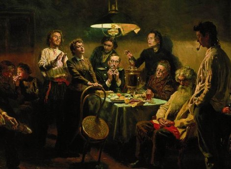

Роман "Бесы" Федора Михайловича Достоевского, написанный в 1871-1872 годах, является одним из самых мрачных и глубоких произведений русской литературы. В нем писатель с ужасающей точностью раскрывает темные стороны человеческой души, затронутые нигилизмом, революционными идеями и поиском смысла в хаосе.
Действие романа разворачивается в вымышленном провинциальном городе, где атмосфера застоя и духовной пустоты становится благодатной почвой для радикальных идей. Группа молодых людей, очарованных революционными идеями, включая бывшего офицера Николая Ставрогина, подвергается влиянию "бесов" - нигилистов-революционеров, во главе с циничным и манипулятивным Петром Верховенским. Центр сюжета: Ставрогин - харизматичный, но разрушенный изнутри герой, который одержим поиском смысла жизни и привлечен деструктивной силой нигилизма. Верховенский - бескомпромиссный и манипулятивный революционер, который не верится ни в что, кроме разрушения устоявшегося порядка.
Харизматичный и трагический: Ставрогин - главный герой, бывший офицер, очарованный красотой и деструктивной силой нигилистических идей. Он одержим поиском смысла жизни, но в то же время он раздираем внутренними противоречиями и не способен принять бескомпромиссный нигилизм.
Искушенный и разочарованный: Ставрогин искушен жизнью, он видел много зла и потерял веру в людей. Он разочарован как в революционных идеях, так и в традиционных ценностях.
Одержимый безумием: Ставрогин одержим идеями нигилизма, но в то же время он боится их последствий. Он находится на грани безумия, и его поведение часто непредсказуемо.
Жертва собственных иллюзий: Ставрогин не способен признать свою слабость и не хочет принимать ответственность за свои действия. Он живет в мире иллюзий, не хотя видеть реальность.
Мастер манипуляции: Верховенский - циничный и бескомпромиссный революционер, который использует людей как пешки в своей игре. Он не верится ни в что, кроме своей идеи о разрушении и хаосе.
Демонический характер: Верховенский представляет собой темные силы, которые разрушают жизнь и душу. Он не способен на любовь и сострадание, и его единственная цель - разрушить все и всех.
Циник и садист: Верховенский не чувствует угрызений совести и наслаждается страданиями других. Он циничен, садистичен и не ограничен никакими моральными принципами.
Враг человечества: Верховенский представляет собой опасность для всего человечества. Он готов на все, чтобы достичь своей цели, и его безумие может разрушить мир.
Разочарованный революционер: Шатов - бывший революционер, который разочаровался в нигилистических идеях и нашел свой путь в православии. Он становится символом противостояния нигилизму и религии, но в то же время он остается жертвой влияния "бесов".
Поиск смысла: Шатов ищет смысл в жизни, но он не может найти его в нигилистических идеях. Он пытается найти истину в православии, но в то же время он остается заложником своего прошлого.
Трагический герой: Шатов - трагический герой, который погибает от рук "бесов". Он символизирует трагический выбор между нигилизмом и верой, и его гибель отражает опасность радикальных идей.
Философ и самоубийца: Кириллов - философ, погруженный в глубокие размышления о свободе и ответственности. Он считает, что человек свободен от всех ограничений и может даже решить вопрос бытия и небытия.
Одержимый идеей свободы: Кириллов одержим идеей свободы, но он не понимает, что свобода без ответственности может привести к разрушению.
Трагический герой: Кириллов покончил с собой, убежденный, что его смерть - это высшая форма свободы. Он символизирует опасность нигилистических идей, которые могут привести к саморазрушению.
Полицейский и символ традиции: Липутин - полицейский, который пытается разоблачить "бесов" и восстановить порядок. Он олицетворяет традиционную силу, но в то же время он оказывается не в состоянии понять глубину и опасность нигилистических идей.
Слабый и нерешительный: Липутин слаб и нерешителен. Он не в состоянии противостоять "бесам" и не может защитить общество от их влияния.
Жертва времени: Липутин - жертва времени, он не может приспособиться к изменяющемуся миру и не способен понять новые идеи и тенденции.
